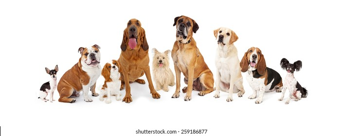

Dogs Are Our Passion, Let Us Take Care of Yours
Dog Walking
Walking your dog is about so much more than just “potty breaks.” Walking your dog provides mental stimulation, physical exercise, chances for socialization, and opportunities for behavioral training. We're here to help.
Dog Training..for the Goodest Boys and Girls
Our methods focus on creating a positive relationship between you and your dog to improve your dog's behavior and obedience. Our expertise is in understanding how a dog naturally thinks, learns and communicates and then using this to show you how to be your dog’s leader. Once this relationship is established, behavior change is a natural next step. Our techniques work with any breed, any age, any issue. You and your dog get one-on-one attention, an individualized plan to suit your family AND guaranteed support for the life of your dog.
Grooming Services
Schedule your next dog grooming appointment with us. We offer a full range of grooming services from baths, haircuts, nail trimming, & more.
Boarding
We offer luxery boarding for your special pup. Give us call at 1-800-856-2341 to find out more!
